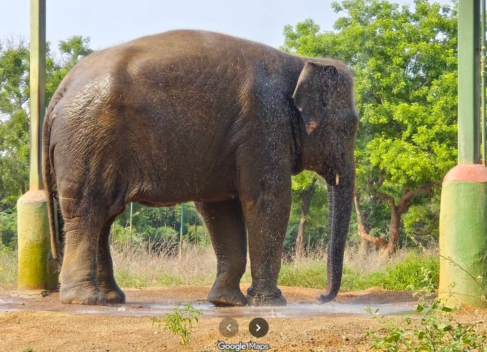

The elephant enclosure at the Arignar Anna Zoological Park (Vandalur Zoo) in Chennai is one of the park's most notable attractions, offering visitors an immersive and educational experience.
🐘 Elephant Enclosure Highlights
Size and Design: Spanning approximately 21 acres, this is the largest enclosure in the zoo. It features a specially designed kraal (a type of pen) that allows for close veterinary care without disturbing the animals.
The Hindu
Elephant Residents: The enclosure is home to two elephants, Rohini and Prakruthi, both of whom were rescued and have found a safe haven here.
livestreaming.aazp.in
Water Amenities: Recognizing elephants' affinity for water, the zoo has constructed a large concrete pond and renovated the elephant shower area. These facilities help the elephants stay cool, especially during the hot summer months.
The Hindu
Daily Activities: Visitors can witness the elephants enjoying their daily shower sessions from 2:30 PM to 3:30 PM. These sessions are a highlight for many, showcasing the elephants' playful nature.
livestreaming.aazp.in
Summer Care: During the sweltering summer months, the zoo ensures the elephants' comfort by providing them with chilled fruits and regular water sprays to help them beat the heat.